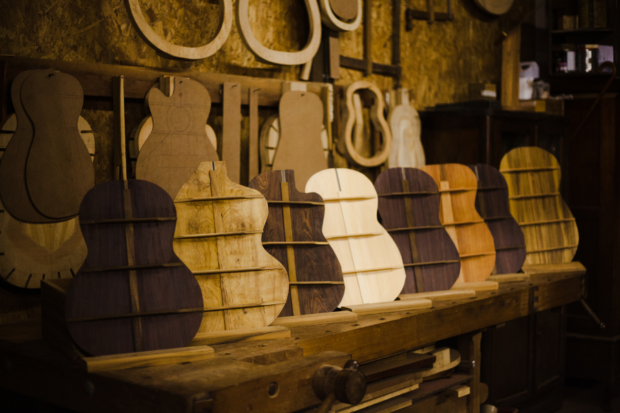
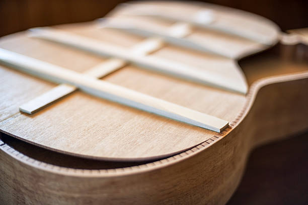
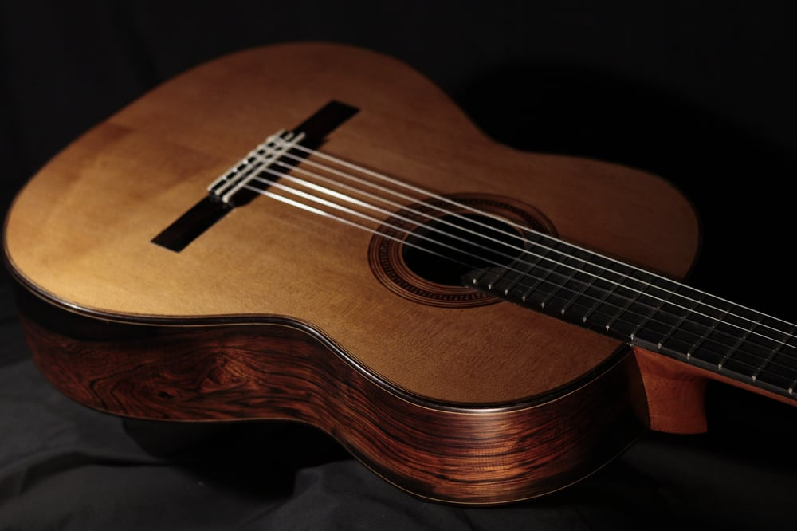

Talvez não seja a pergunta de muitos mas é impostante saber especialmete que é o que diferencia de preço, o motivo de existir violões de 400 reias e de 20 mil reias.
As madeiras usadas em um violão são peças-chave para definir o timbre do instrumento. Portanto, dependendo do estilo que você toca, um determinado tipo de madeira é indicado para se chegar em tal sonoridade.Assim sendo, cada tipo de madeira para violão tem suas particularidades, cada um gerando uma timbragem própria.
No entanto, um violão pode ter mais de um tipo de madeira. Ou seja, uma madeira utilizada para o tampo do instrumento, outra para as laterais/fundo e um terceiro tipo para o braço, por exemplo.
O violão é uma caixa de ressonância arredondada feita de madeira. Nesse sentido, o som é enviado pela boca do violão. Na fabricação do instrumento, primeiramente, são feitas as laterais. Assim, para se chegar à curvatura desejada, a madeira é submetida a uma prensa térmica. Logo depois, são colocados o tampo e o fundo. Por fim, a caixa do violão é lixada, e são feitas as devidas medições para a colocação do braço do instrumento.
Alguns critérios devem ser considerados na escolha das madeiras para a fabricação de um violão. Confira: Disponibilidade da madeira na natureza; Resistência do material; Preço; Timbragem que se deseja obter.
Braço : É onde a mão esquerda (ou direita, no caso dos canhotos) fica apoiada. Serve, principalmente, para sustentar a escala (que você verá no próximo item).
Escala : É onde a mão “fraca” pressiona as cordas, produzindo diferentes notas.
Cabeça : É a extremidade de cima do violão, onde ficam as tarraxas.
Traste : Delimitam as casas, que definem as notas que serão tocadas (caso pressionadas)
Cordas : Uma das partes do violão mais importantes. São as cordas que permitem que o som exista, ficam distribuídas entre a ponte e a cabeça, passando pelo braço. Há 6 cordas no violão comum, sendo 3 de nylon e 3 de aço no violão de cordas de nylon, e 6 de aço no violão de cordas de aço.
Corpo : É ele que permite que o som das cordas ganhe volume. É o maior “membro” do violão.
Ponte : Onde as cordas terminam (ou começam) no corpo.
Boca : Permite que o som amplificado das cordas saia do instrumento.
Pestana (ou capotraste) : Funciona como apoio das cordas no final do braço.
Tarraxas : Ficam na cabeça e permitem afinar o violão.
Marcadores de casas (não representado) : Definem determinadas posições no braço do instrumento, auxiliando o violonista a localizar onde quer tocar.
Mosaico : Desenho decorativo ao redor da boca.